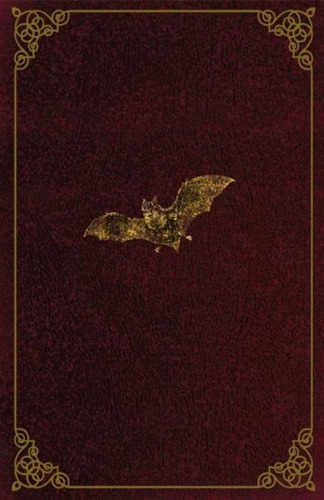
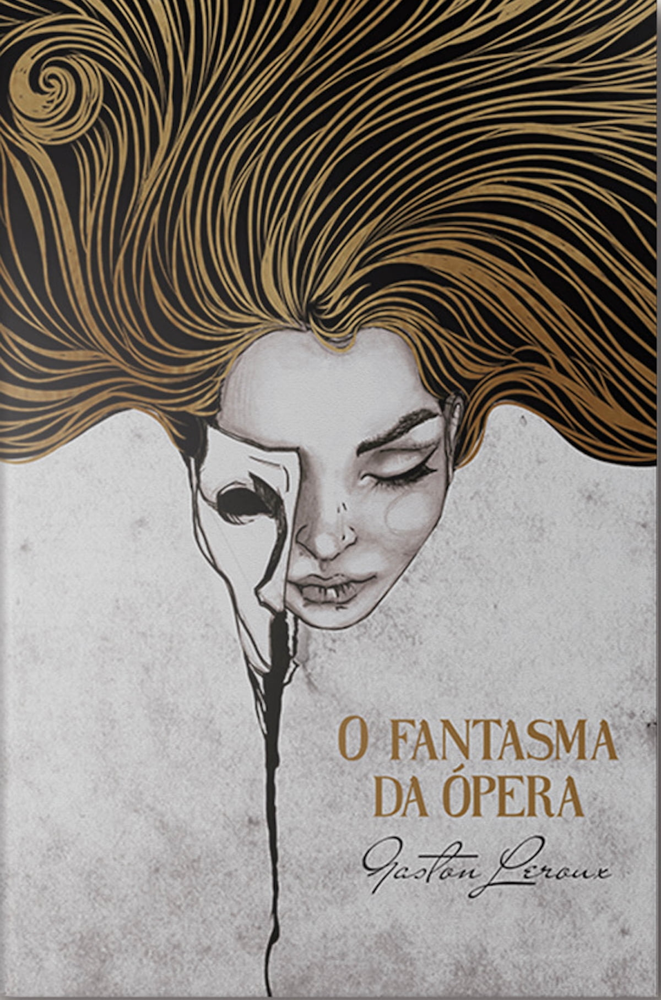
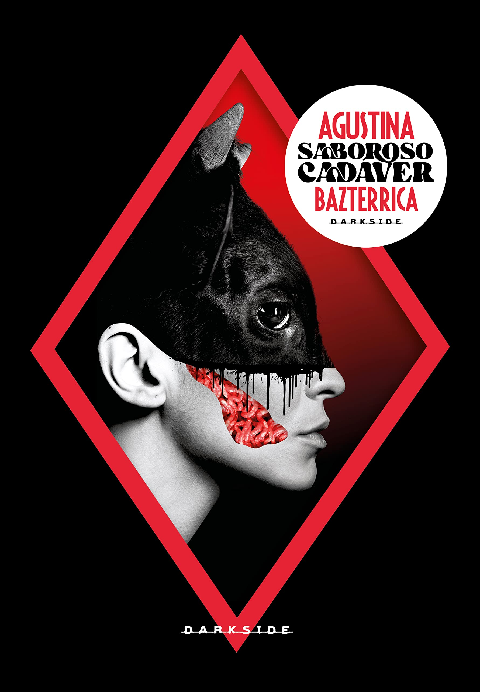

Harry Potter e a Ordem da Fênix

Sinopse
Tempos sombrios se abateram sobre Hogwarts. Depois do ataque dos Dementadores ao seu primo Dudley, Harry
Potter sabe que Voldemort fará tudo para encontrá-lo. Muitos negam o retorno do Lorde das Trevas, mas Harry
não está sozinho: uma ordem secreta se reúne no Largo Grimmauld para fazer frente às forças sombrias. Harry
precisa permitir que o professor Snape o ensine a se proteger dos vorazes ataques de Voldemort à sua mente.
Mas eles estão ficando cada vez mais fortes, e o tempo de Harry está acabando...
Fonte: Google Books
| Data |
Autor |
Idioma Original |
Gêneros |
Editora |
Número de Páginas |
| 21 de junho de 2003 |
J.K.Rowling |
Inglês |
Romance, Ficção, Juvenil, Literatura fantástica. |
Pottermore Publishing |
987 páginas |
Drácula

Sinopse
Na história, um jovem inglês é mantido em cativeiro, à espera de
um destino terrível. Longe dele, sua noiva bela e jovem é atacada por uma doença misteriosa que parece extrair o
sangue de suas veias. Por trás de tudo, a força sinistra que ameaça suas vidas: Conde Drácula, o vampiro vindo do fundo dos séculos..
Fonte: Google Books, Amazon
| Data |
Autor |
Idioma Original |
Gêneros |
Editora |
Número de Páginas |
| 26 de maio de 1897 |
Bram Stoker |
Inglês |
Horror Gótico,Romance Espitolar. |
Pandorga Editora |
500 páginas |
Agente do Caos(The X-files: Origens)

Sinopse
Como Fox Mulder começou a acreditar?
Antes de entrar para o Arquivo X, antes de ser um agente do FBI, antes de estudar psicologia em Oxford, Fox
Mulder era um adolescente lidando com a perda da irmã e com uma família destruída. Mas quando outra garotinha
desapareceu, ele talvez fosse o único capaz de salvá-la.
Fonte: Google Books
| Data |
Autor |
Idioma Original |
Gêneros |
Editora |
Número de Páginas |
| 20 de março de 2017 |
Kami Garcia |
Inglês |
Ficção ciêntifica, Mistério. |
HarperCollins Brasil |
320 páginas |
O Fantasma da Ópera

Sinopse
Rumores de que um fantasma espreita as passagens escuras e os porões da Ópera de Paris, causando estragos, são
frequentes entre os funcionários e artistas. Esse mesmo fantasma também assombra a imaginação da bela e
talentosa cantora Christine Daaé. Quando a moça é cortejada por um jovem visconde, o misterioso espectro é
consumido pelo ciúme e busca vingança.
Fonte: Google Books, Amazon
| Data |
Autor |
Idioma Original |
Gêneros |
Editora |
Número de Páginas |
| 23 de setembro de 1909 |
Gaston Leroux |
Francês |
Romance, Terror, Ficção Gótica, Romance policial histórico. |
Pandorga Editora |
434 páginas |
Saboroso Cadáver

Sinopse
Diz o antigo ditado que Você é o que você come . No romance Saboroso Cadáver, de Agustina Bazterrica, esse ditado
é levado às últimas consequências. O livro conta a história de um vírus que se espalha entre os animais de todo
o planeta e torna sua carne mortal aos humanos.
Fonte: Site Vitrola, Amazon
| Data |
Autor |
Idioma Original |
Gêneros |
Editora |
Número de Páginas |
| 2017 |
Augustina Bazterrica |
Português |
Ficção. |
Darkside |
192 páginas |